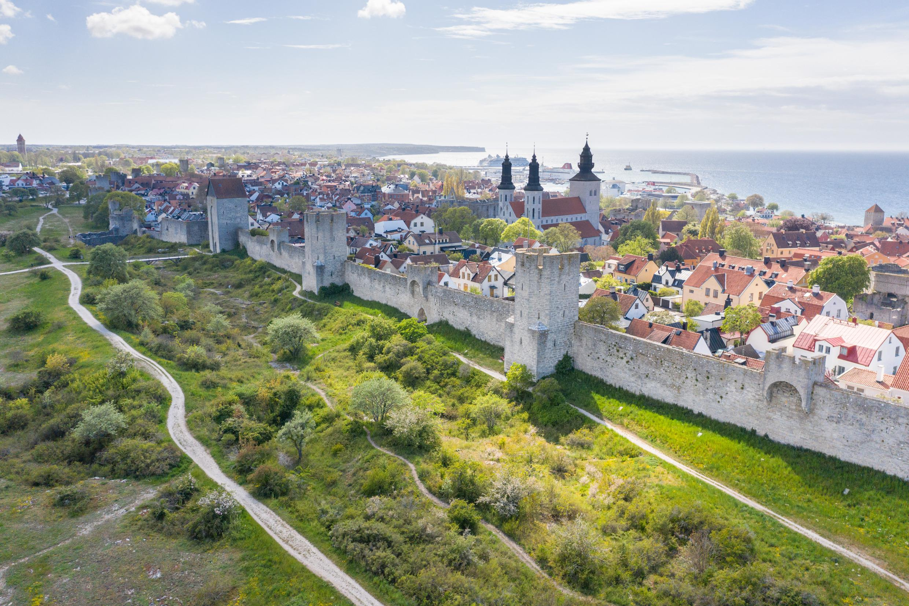

Gotland väntar på dig
En ö där kalkstenshällar möter Östersjön, fåren betar fritt och tiden går lite långsammare. Det här är inte en researrangörs broschyr – det är tipsen jag önskar att någon gett mig innan mitt första besök.
Se sevärdheternaVarför åka till Gotland?
Visby ringmur är en av norra Europas bäst bevarade medeltida stadsmurar, och att gå längs den i kvällsljus är svårt att beskriva utan att låta klyschig. Utanför staden väntar råkker, klapperstensstränder och lammen som verkar bo överallt. Det är en ö man upptäcker i sin egen takt – gärna med cykel och utan för mycket plan.
Bästa tiden att åka
Sen vår och tidig höst är vårt tips. Sommaren är förstås vacker men Visby svämmar över av folk i juli. Kommer du i maj–juni eller september ser du samma hällar och samma ljus, men får dem nästan för dig själv.